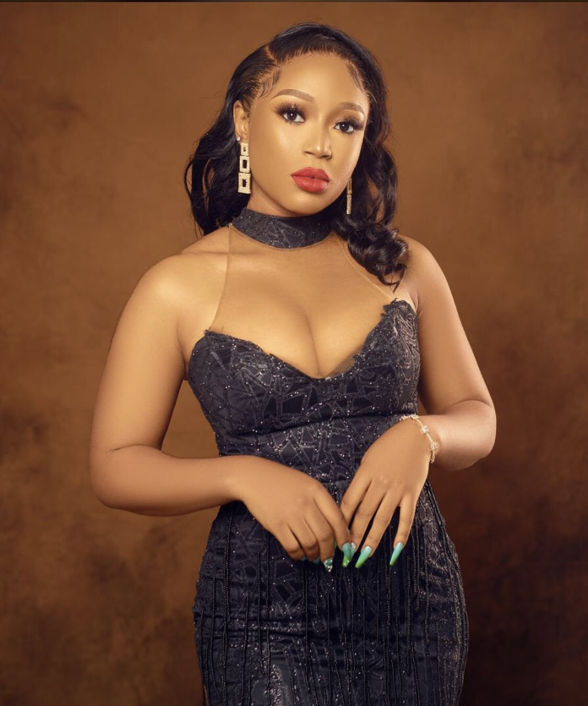
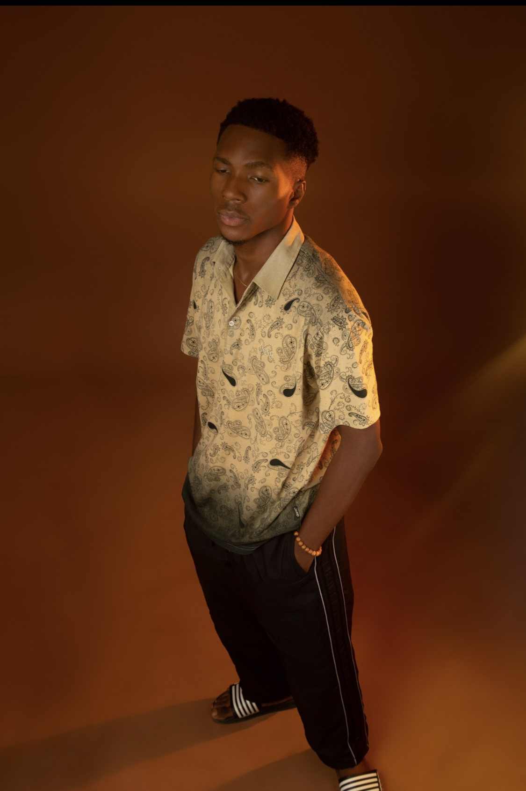
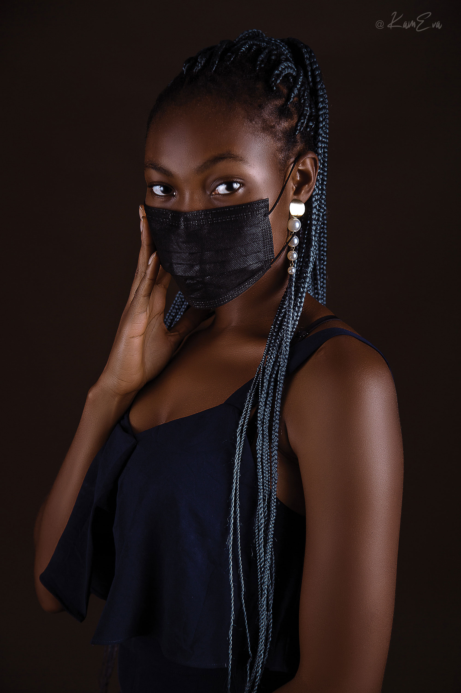
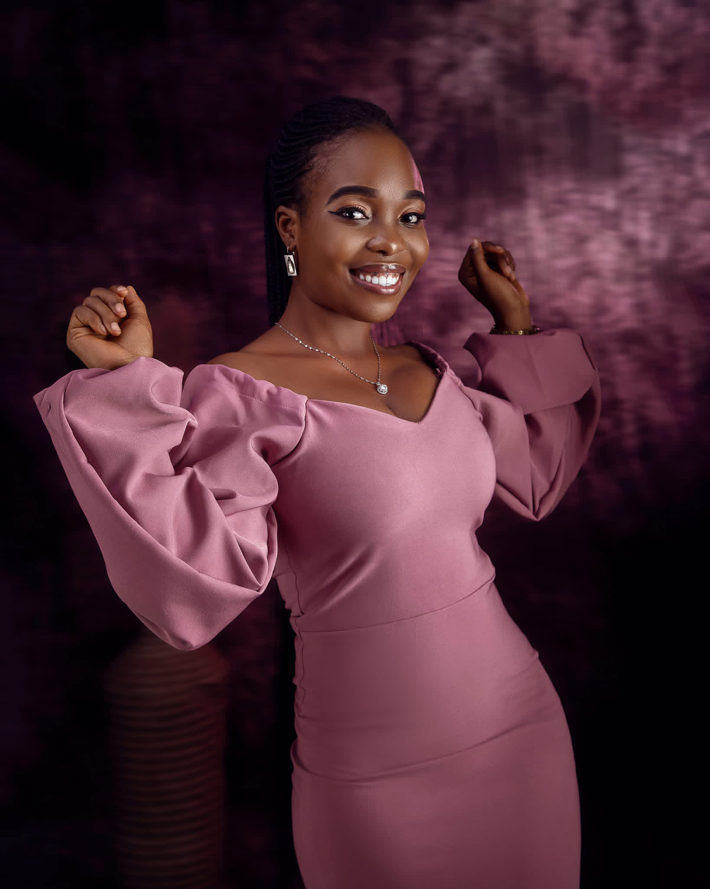
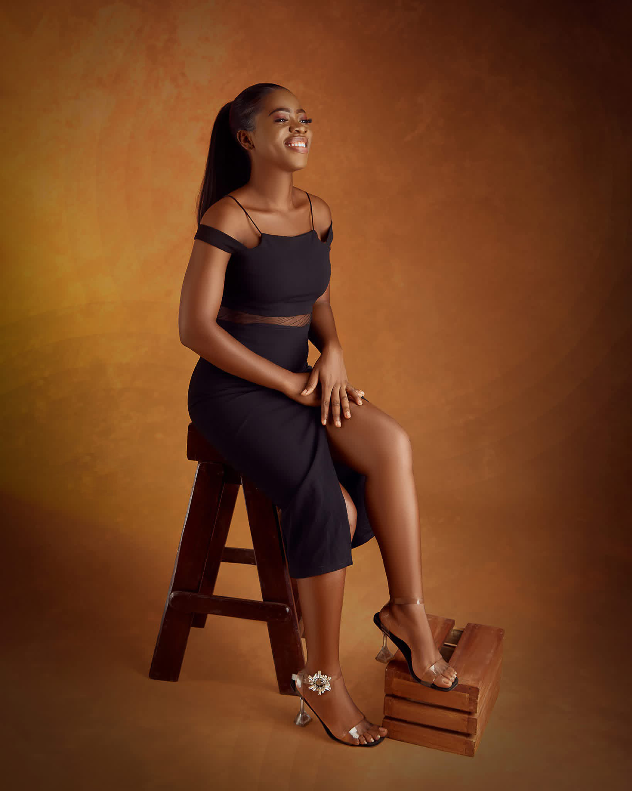
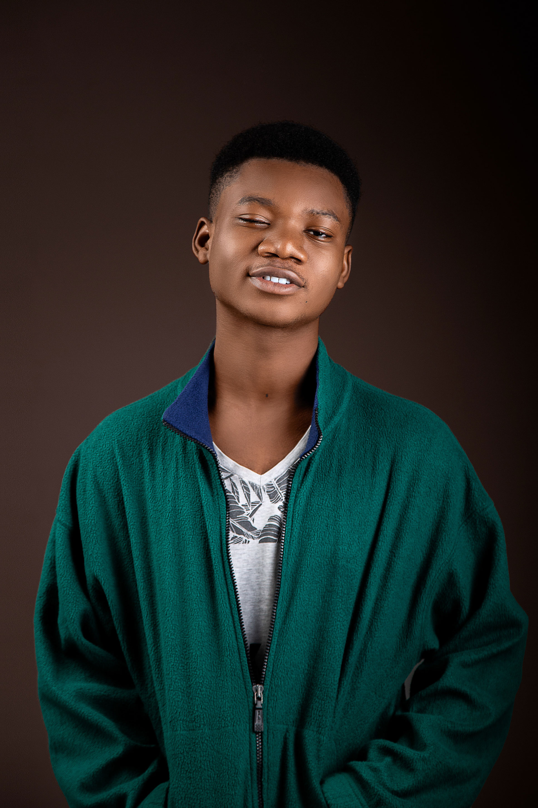
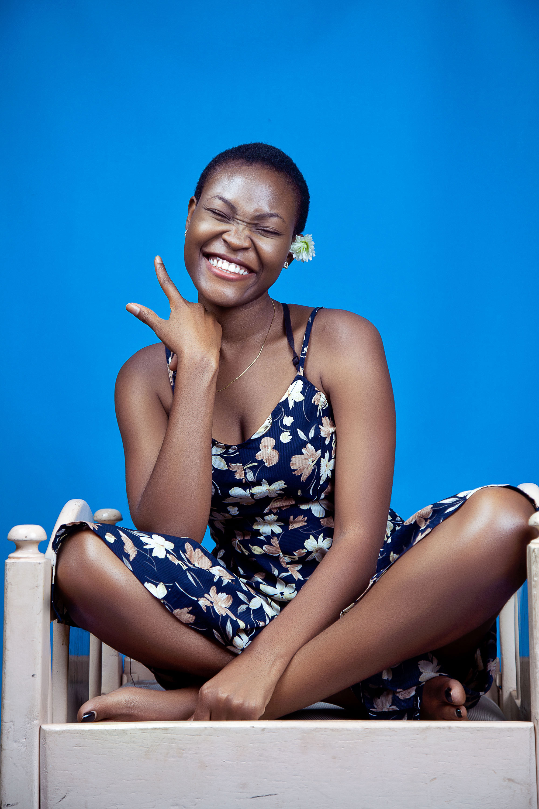

PORTFOLIO
Portraits, stories and visual experiences created with intention, emotion and artistry.







BOOK A SESSION
Available for portrait, maternity, wedding, fashion, family, and event commissions in Lagos, Nigeria and worldwide.